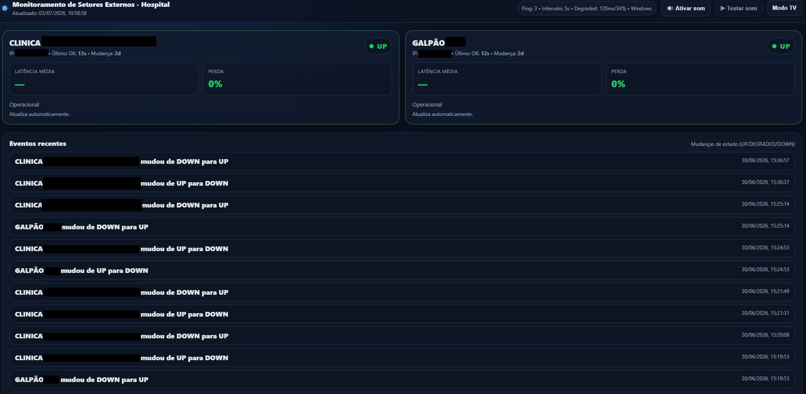
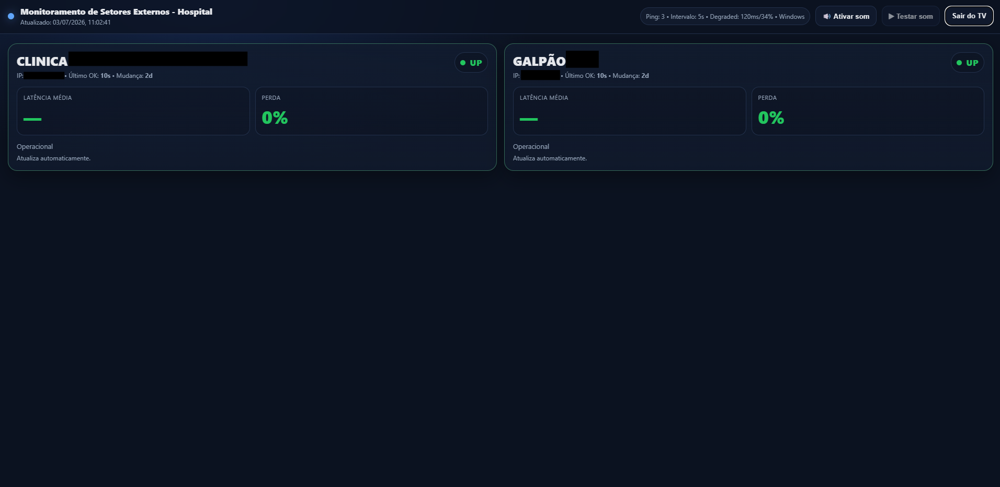
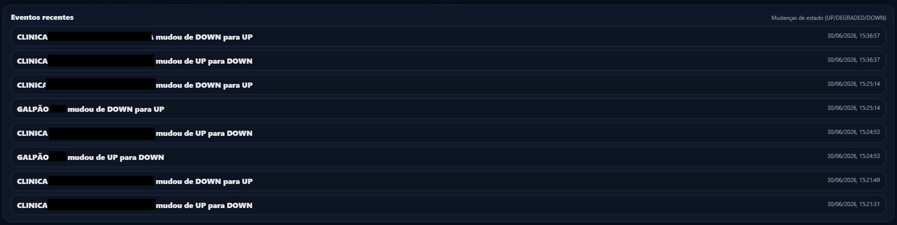

Monitoramento de Clínicas
Sistema responsável por monitorar a conectividade das unidades externas através de testes contínuos de ping, garantindo a detecção imediata de falhas de comunicação entre o hospital e as clínicas.

Sobre o Projeto
Sistema desenvolvido para monitorar a conectividade das clínicas externas, garantindo visibilidade em tempo real da comunicação entre unidades e o hospital.
Objetivo
Garantir a disponibilidade dos links de comunicação das unidades externas.
Problema Resolvido
Identificação tardia de quedas de fibra e perda de conectividade.
Solução
Monitoramento contínuo via ping para detecção imediata de falhas.
Resultado
Resposta mais rápida da TI e redução do impacto aos usuários finais.
Monitoramento em Ação
Visualização do status das unidades e acompanhamento da conectividade.

Dashboard
Visão geral do status de conectividade das clínicas.

Status de Conectividade
Exibição em tempo real do resultado dos pings nas unidades.
Como Funciona
Fluxo simples e eficiente de monitoramento de rede.
Servidor de Monitoramento
Executa os testes de conectividade.
Clínicas
Unidades externas monitoradas via rede.
Ping (ICMP)
Verificação contínua de conectividade.
Alerta TI
Notificação em caso de queda.
Desafios e Soluções
Principais pontos técnicos do desenvolvimento do sistema.
Detecção de falhas de rede
Implementação de monitoramento contínuo via ICMP para identificação de quedas de conectividade.
Monitoramento contínuo
Execução automática de testes em intervalos definidos para garantir atualização em tempo real.
Redução de impacto operacional
Permite atuação da TI antes que usuários finais percebam a indisponibilidade.
Gostou deste projeto?
Conheça outros sistemas de infraestrutura e automação desenvolvidos.